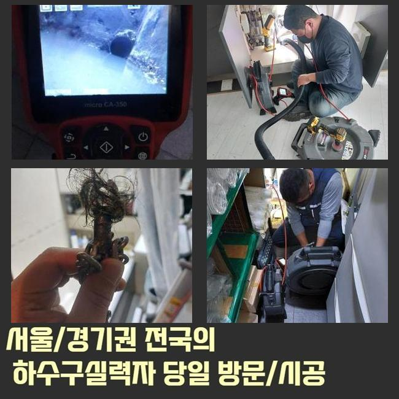
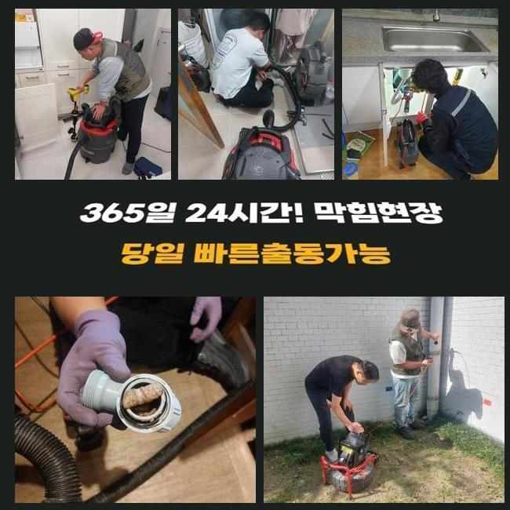
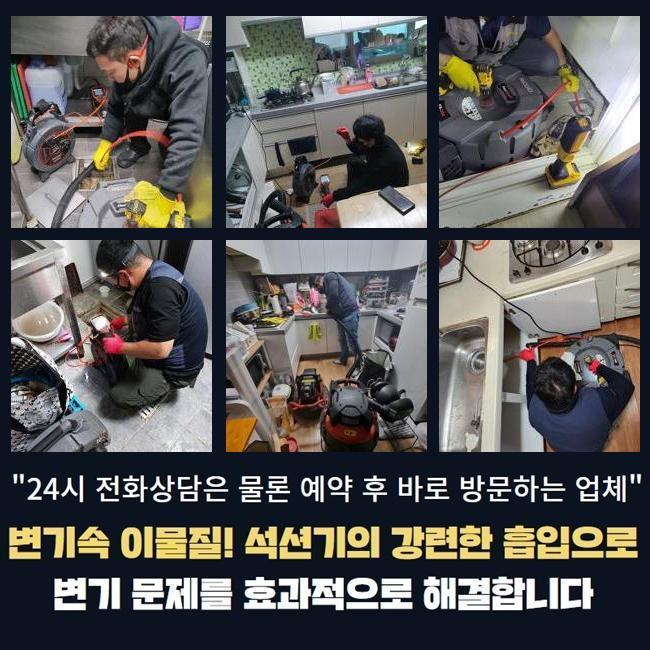
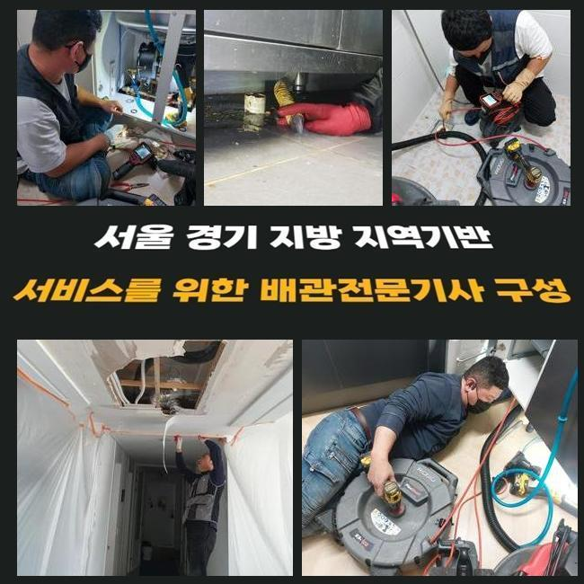
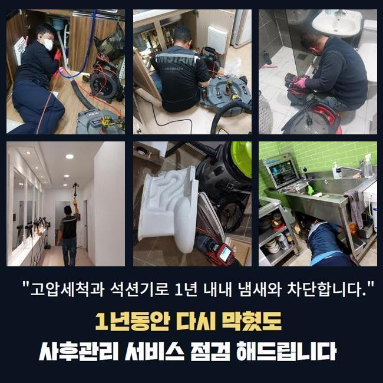
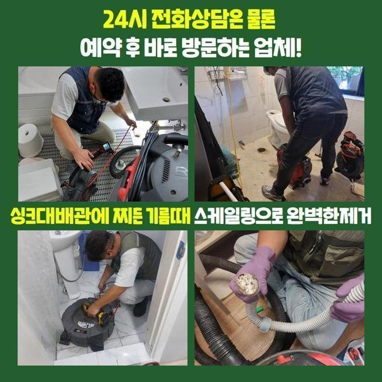

🏠 남동구 운연동씽크대배수구역류 논현동 배수로뚫기 배관뚫는업체
용인 남동 싱크대막힘 전문 시공 후기

📋 작업 개요
- 위치: 용인 남동, 남동, 용인
- 서비스 유형: 싱크대막힘, 하수구막힘, 배관막힘, 역류해결, 뚫는업체, 배관청소, 고압세척, 설비공사, 악취차단
- 작업 일시: 2024. 11. 28. 21:26
- 업체명: 하수구수사대 (010-5615-2118)
🔍 문제 상황
남동구 운연동씽크대배수구역류 논현동 배수로뚫기 배관뚫는업체
아파트 하수관이 고장나면 다수가 느끼는 불편감은 말로는 다할 수 없을 정도죠
기능상으로 완벽했던 하수관이 뜬금없이 고장나기도 하지만 거꾸로 물이 솟는 현상까지 일제히 발현되기도 합니다
이러한 사고가 터지기 이전에 미리미리 대비하여 배관을 케어하는 방법도 존재하므로 이번 사례를 보시고 고객님 댁의 시설물들도 셀프 테스트를 한 번 해보세요
집안의 하수구 통수 장애를 조속히 고쳐줬으면 한다는 접수를 받고서 행동을 서둘러서 현장으로 향하게 되었습니다
물이 내부에 계속 누적되면 혼탁한 하수가 밑에서 올라오다보니 생김새가 다양한 오염원이 산재하게 되고 뚜렷한 배관 악취도 무시못하게 방출됩니다
상상치 못했던 찌꺼기들로 인해서 상당한 불편함을 갖고 계셨던 의뢰인분이 절박한 마음으로 저희를 찾아주신 것입니다
막힘이 도래했을 때 셀프 도구들을 활용해서 개통을 해보려고 합니다
오래되지 않은 신규 막힘이면 고온의 물을 흘려보내거나 소비자도 쉽게 쓸 수 있는 뚫어뻥이나 관통기를 쓰거나 용해제를 안에 넣음으로써 내부정화를 하기도 합니다
그러나 애써서 하수관을 셀프로 뚫어봐도 조만간 또 막힘이 생겨서 노력의 가치를 잃고 맙니다
대응법을 잘 모르신다면 이번 글을 필독하시고 인근 실력이 뛰어난 업체를 물색하셔서 풀어보시는 것을 여러분께 추천드리겠습니다!

🔎 원인 분석
💡 전문가 진단: 정밀 진단 장비를 사용하여 슬러지의 고착 여부를 판명하고 타격/세척 작업을 실시했습니다.
고객님께 상황을 전달받고 관찰해보니 막혀있는 구멍에서 생긴 역류도 계속해서 일어나는 중이었어요
거꾸로 오폐수가 솟구치면 악취도 상당하게 퍼지고 벌레 및 세균이 침범할 수 있으니 빠른 해결을 시도하시는 게 좋아요
이번 작업지의 고객님이 언급하신 바는 나름 규칙적으로 배관 정비를 진행했음에도 이런 문제점들이 연달아 빚어졌다고 해요
현재 같은 건물에 있는 여러 세대에 걸쳐 비슷한 장애를 겪는다면 중앙을 흐르는 관로에 어딘가 문제가 생겨버린 상황일 수도 있습니다
단일 세대를 고친다고 임시방편에 불과하니 총체적인 건물의 하수시스템의 체계적인 검토 절차가 필요하죠
월례행사처럼 정기점검 일자를 설정해서 문제가 터지기 전에 무결점의 하수구가 유지되는지 관심있게 봐줘야 합니다
하수처리가 안되는 현황을 수월하게 해소하고자 관내의 뷰를 보여주는 내시경으로 내부 조사부터 착수했어요
옥외 관로로 이어지는 배관에 뚜렷한 이슈가 있다는 사실을 알아차린 뒤 많은 하수를 처리하는 메인관을 통해서 집중적으로 보려고 했습니다
뚜껑을 조심히 들어내자 대량의 오염물이 유출됐었고 밀집도 있게 차올라서 수돗물이 제대로 방출되지 못한 사실을 추론하게 됐네요
깊이가 상당한 영역의 문제라면 사실상 가벼운 도구만으로 독립적인 청소를 하는 것은 그리 경과가 좋지 못할 것입니다
난이도가 어려운 상황일수록 애초에 전문업체에 의뢰하는 게 모두의 안녕을 위해서 훨씬 옳은 결정입니다

🔧 작업 과정
먼저 메인관로 내부의 노폐물을 덜어내기 위하여 석션 기기를 정상가동시켜서 물에 떠다니는 찌꺼기 흡수를 해보기로 했어요
이 작업을 통해서 경로방해를 하는 물질들을 효과적으로 빨아당깁니다
작동 방식으로 보자면 청소기와 시스템이 같은 구조를 탑재하고 있어서 배관 속에서도 짱짱하게 돌아가요
열심히 작동을 시켜서 잔여물 없이 정리해야만 미래에 똑같이 물이 끊기는 곤란한 일들을 막아설 수 있습니다
묽게 풀려있는 오물을 제거하고 개선 결과를 보려고 내시경 장비를 안으로 도로 넣어 근황이 어떤지 봐줬습니다
대량 확산된 오물덩어리가 사라진 점을 체크했으며 물길이 시원스럽게 확대된 것 역시 감지할 수 있었네요
석션을 가동하여 대형 이물질은 없앴으나 여전히 남겨진 소규모 사이즈의 오물들을 무결점으로 삭제시키려면 하수관의 고압세척 단계가 들어가야 합니다
이 공법은 심한 경우에 쓰는데 고압으로 뭉친 물을 쏘아대며 관로 곳곳에 부착되고 끼인 기름지고 오래된 묵은 때를 없애서 청결하게 만드는 일입니다
가벼운 막힘사안에 쓰기에는 다소 오버스펙이지만 메인배관에 적용하면 시간을 단축시켜주는 고강도 기기 라인업입니다
환경에 맞는 계획을 세우는데 건물의 하수를 담당하는 메인파이프와 또한 집의 가지배관들이 상당부분 낡아 있었으므로 작업 중 다치지 않도록 적절한 세기로 조절해가면서 파이프라인을 정비해 나갔습니다
오랜 시간 고압세척을 반복시공하면서 오물들을 모두 긁어내주었습니다
카메라로 마지막으로 마감이 가능할지 체크했는데 걸림돌없이 말끔해진 관로가 시각적으로 확인되어 저또한 매우 흡족한 결과였어요
시공에 들어갈 영역을 줄여주는 게 좋으니까 여러 해결책들을 끝없이 구상하고 궁리합니다
설치되어있는 하수관의 구조나 특성을 고려해서 작업 방도가 상이할 수 있는데 부주의한 고압 세척 단계를 하면 수로가 부러질 염려가 있으며 배관 자체를 교체하게 된다면 부담이 눈덩이처럼 불어날 수 있죠
처음부터 풍부한 경험을 가진 자부심있는 전문업체를 셀렉하는 게 첫걸음입니다
배관은 겉으로 보기보다 어려운 부품이고 굉장히 난해한 구조를 띄고 있기 때문에 전문적 지식을 함양해야 유연하게 다룰 수 있어요
일부분의 클리닝만 마무리했다고 하여 배수관 전부의 흐름이 재복구되는 건 힘들고 재발이 발생할 때도 많답니다


✅ 작업 완료
어설픈 업체가 공사를 하는 상황이면 배수로에 꼼꼼한 세정을 했는데도 조만간 또 다시 차단되어버려서 다른 업체를 찾아 컨택하는 번거로움이 생기며 막대한 자원을 소모하게 됩니다
하수구가 완전 차단되기 전에 방해 요소를 제거하는 방식도 있는데 이를 지금부터 소개할게요
수기로 치우거나 배관용 세제로 청소하거나 모발을 걸러주는 필터를 활용하셔도 좋습니다
충분히 뜨거운 물을 받아서 배관 내로 내려보내거나 필터망을 상단에 다는 법도 있는데 이와 같은 예방 수단들을 이행 했는데도 하수관 고장이 존속되면 전문업체의 도움이 절실한 것입니다!
이러한 배관 관련 이슈로 골머리를 앓는 분들은 걱정 없이 접수를 해주시면 가리는 것 없이 문제를 해결해 드리겠습니다




⚠️ 주방 싱크대 배관 막힘 예방 수칙
- ✅ 기름기가 묻은 식기나 프라이팬은 설거지 전 키친타올로 반드시 기름때를 닦아내세요.
- ✅ 주기적으로 싱크대 개수대에 뜨거운 물을 가득 받아 한 번에 내려 배관 내부 기름을 씻어내세요.
- ✅ 배수구 거름망을 미세한 필터로 사용하시고 음식물 찌꺼기가 틈으로 새어 들지 않게 관리하세요.
- ✅ 베이킹소다와 식초를 뜨거운 물과 함께 일주일에 한 번씩 부어주면 배관 살균과 막힘 예방에 좋습니다.
💡 핵심 정리
- 확실한 장비 작업(내시경 점검 및 샤프트 스케일링)으로 원인을 뿌리 뽑습니다.
- 작업 후 1년 이내에 동일한 부위 재발 시 100% 무상 A/S 서비스를 보장합니다.
- 서울 · 경기 · 인천 전 지역에 24시간 언제든 긴급 출동할 수 있도록 항시 대기 중입니다.
❓ 자주 묻는 질문 (FAQ)
🚨 용인 남동 싱크대막힘 문제로 고민이신가요?
정확한 원인 진단과 확실한 시공으로 재발 없는 해결을 약속드립니다.
24시간 긴급 출동 | 서울 · 경기 · 인천 전지역 | 1년 내 재발 시 무상 A/S